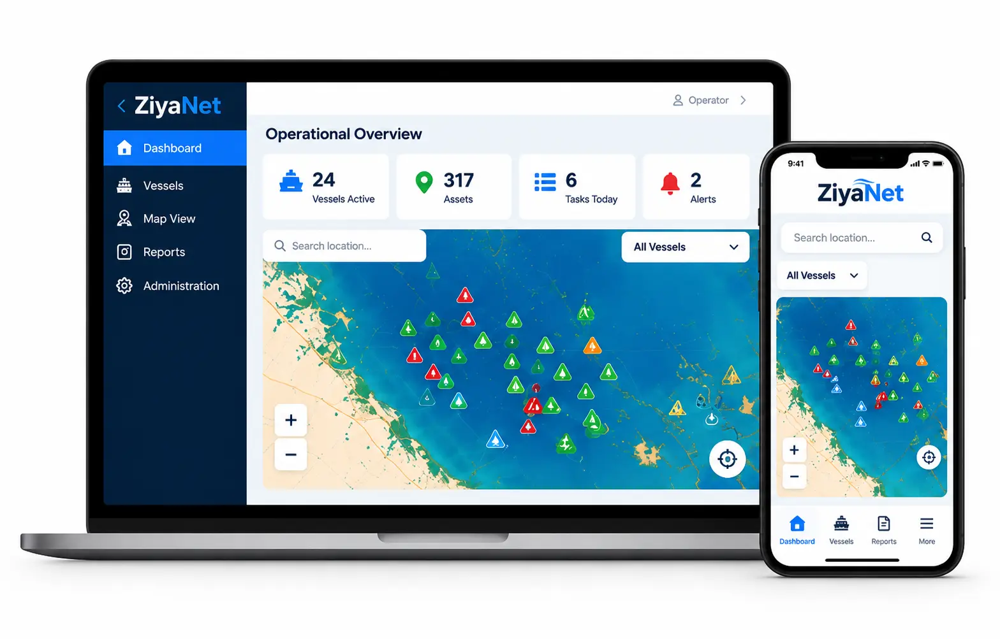

INNOVATIVE TECHNOLOGY FOR A SMARTER MARINE INDUSTRY
Smarter Marine Operations
for a Safer, More Connected Tomorrow
ZyNova Technologies develops intelligent software solutions designed to bring operational visibility, informed planning, and better decision support to the marine and offshore industry.
Explore ZiyaNet◉
Fleet VisibilityA clearer view of vessels and marine operations
◷
Marine PlanningCoordinate activities and resources with confidence
▥
Decision SupportTurn operational information into useful insights
OUR FLAGSHIP PRODUCT
ZiyaNet
Marine Operations Management and Decision Support Platform
ZiyaNet is being developed to bring marine operational information into one integrated digital environment. It aims to help organizations improve operational visibility, coordinate vessel activities, plan resources, and make more informed management decisions.
Operational VisibilityConsolidated marine and vessel information
Marine PlanningSupport for resource planning and activity coordination
Management DashboardsClear visual information to support decisions

Illustrative interface concept — features are under development.ABOUT ZYNOVA
Technology with a marine focus
ZyNova Technologies is an emerging technology brand focused on practical digital solutions for marine and offshore operations. Our vision is to make complex operational information easier to understand and use, helping teams plan effectively and management make informed decisions.